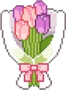
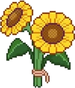

Python Zero2One
Start
Welcome to the Enchanted Forest of Python
"This is not a cold syntax dictionary. This is an interactive grimoire for cultivating computational intuition—growing your mind from Seed 0 to Canopy 1."
Most programming tutorials teach you what to type. This guide teaches you how to think so that every line of Python you write feels natural, purposeful, and clear.
From Seed 0 to Canopy 1 — Interactive Growth Visualizer


STAGE 0 / 3 — THE SEED
The Seed: Computational Mindset (Cards 0–1)
Before writing a single symbol of syntax, you learn how machines follow literal, sequential steps from top to bottom.
# Stage 0: Think in clear steps first
step_1 = "Locate the jar"
step_2 = "Open lid before spreading"
GUIDE How to Explore This Woodland Grimoire (Controls & Shortcuts) + Explore
- Keyboard & Swipe Navigation: Press your
←and→arrow keys (or swipe on touchscreens) to move effortlessly between cards. - Quick Card Jumper: Click the card badge (e.g.
Startor3 / 15) in the header anytime to jump directly to any of the 16 cards. - Sunlit Glade & Woodland Night: Click the glowing Pixel Sun in the top-right corner anytime to toggle between cozy dark mode and warm parchment daylight.
- 16 Botanical Pixel Cursors: On desktop, click the Cursor button in the top-right corner to equip any of the 16 pixel flowers or 30 pixel pointers.
- Redeem All 16 Blooms: Collect flowers across Cards 0–15 and redeem them on Card 15 for a printable & shareable Certificate of Programming Fundamentals!

Core Philosophy: Understanding why something works is infinitely more valuable than memorizing how to type it. Every card rewards your curiosity with interactive experiments and a new woodland bloom!
Want Personalized 1-on-1 Mentorship?
MereSophist (meresophist.xyz) is our companion tutoring studio offering tailored human guidance in Python, computer science fundamentals, and analytical thinking.
Welcome, apprentice. Use the Left and Right arrow keys to move between cards, click the sun in the top corner to switch lighting, or choose a custom pixel cursor.